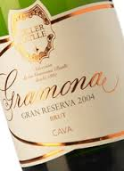
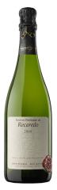
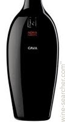
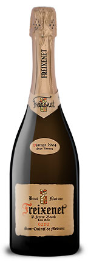
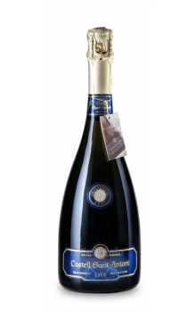

El cava es un vino espumoso elaborado por el método tradicional en la Región del Cava en España, fundamentalmente en la comarca catalana del Penedés (provincias de Barcelona y Tarragona). Allí San Sadurní de Noya es el centro de producción más importante y sede del consejo regulador.3 También se elabora cava con denominación de origen en otros puntos de España. El Consejo Regulador del Cava determina como Región del Cava a la formada por un total de 159 municipios de las provincias de Barcelona (63), Tarragona (52), La Rioja (18), Lérida (12), Gerona (5), Álava (3), Zaragoza (2), Navarra (2), Badajoz (1) y Valencia (1), que en su conjunto configuran la zona de producción delimitada del Cava y, por tanto, son los únicos con plena capacidad legal para producir este tipo de vino espumoso y comercializarlo bajo este nombre.
Las variedades principales de uvas utilizadas en la preparación del cava son: macabeo, parellada y xarel·lo. Cada una aporta al cava unas características que se complementan:
->El macabeo aporta dulzor y perfume.
->La parellada aporta finura, frescor y aroma.
->El xarel·lo aporta cuerpo y estructura.
La chardonnay y la pinot noir se utilizan para producir imitaciones de champaña. También existen otras variedades secundarias, como el subirat parent, también llamado malvasía. Para los cavas rosados se utilizan también las variedades negras garnacha, monastrell y trepat.
Bautizo de un vehículo en Alemania con cava Castell dels Sorells.
A partir de estas variedades de uva se elabora el vino base, que es el vino tranquilo que se utilizará para elaborar el vino espumoso en una segunda fermentación. El proceso de vinificación es el normal, con un prensado suave a baja presión de los mostos, una clarificación para eliminar los fangos del mosto —tierra y hojas— y fermentación en grandes tanques. Una vez obtenidos los vinos base se hace la mezcla adecuada.
|  |
Gramona Celler Batlle 2005.Gramona elabora sus cavas de la forma más artesanal posible, utilizando corcho natural durante la crianza, pupitres para el removido y degüelle manual. Así consigue vinos elegantes, con una burbuja fina y consistente, vinos de gran equilibrio y complejidad como su extraordinario Celler Batlle. Celler Batlle es un cava histórico en Gramona y toma el nombre del apellido de la familia fundadora, los Batlle, quienes crearon la bodega (Celler Batlle en su origen) en 1881. Las uvas con las que se elabora proceden de la finca La Plana, la tierra de la que nacen también los fantásticos Gramona III Lustros y Gramona Enoteca, cuatro hectáreas de xarel·lo más una hectárea de macabeo, plantadas sobre suelos de arcillas con sustrato arenoso. Es un cava con una larguísima crianza, más de 100 meses, al que Gramona añade su particular toque convirtiéndolo en un cava brut de personalidad única: un licor de expedición con tan sólo 6-8 gramos/litro de azúcar añadido y el secreto contenido en una solera familiar de más de 100 años; es la pincelada que culmina la gran obra. Celler Batlle es un gran cava, magnífico en sí mismo, intenso, profundo y complejo, que difícilmente olvidarán quienes han tenido la fortuna de degustar alguna de sus cosechas más emblemáticas. Es muy rico en aromas de fruta blanca escarchada (melocotones, manzana golden y albaricoques), con notas cítricas, destellos de hierbas aromáticas (pino, encina) y de musgo, y casi infinitas notas de crianza (corteza de pan tostado, avellanas, nueces, toffee, praliné, moka...). Tiene una entrada en boca contundente y llena de matices; es equilibrado, maduro y cremoso, con una burbuja fina y un final mineral. Un gran cava, comparable, en exquisitez y armonía, a los grandes champagnes. | |
|  |
Recadeo.Recaredo es y ha sido siempre sinónimo de calidad, elogiado por sus virtudes: cavas profundos, complejos, sedosos, vivos, elegantes y con una larga vida por delante los más sublimes. Son cavas elaborados con uvas precedentes únicamente de sus viñedos propios, cultivados de forma ecológica y biodinámica (ambas, certificadas), sin adición de azúcar (siempre Brut Nature) y con larguísimas crianzas en botella (siempre Gran Reserva), con corcho natural y con degüelle a mano a temperatura ambiente sin necesidad de congelar el cuello de la botella, cavas siempre de añada que reflejan fielmente el carácter de cada cosecha y con indicación de la fecha de degüelle en la contraetiqueta. Una lista de virtudes sin duda larga y envidiable, verdadero motivo de la grandeza y excelencia que se percibe en cada copa. Josep Mata Capellades empezó a elaborar cava en 1924 y fundó la bodega que hasta hoy llevaría el nombre de su padre, Recaredo Mata Figueres. En la actualidad, son los hijos del fundador, Josep y Antoni Mata Casanovas, quienes dirigen esta bodega pionera en la elaboración de cavas totalmente secos (brut nature) y de larga crianza. Cava Recaredo cultiva las 46 ha. de viñedos propios con el mínimo de intervención, buscando siempre el equilibrio de la cepa y procurando respetar el medio para conseguir la expresión de cada vendimia; una viticultura exclusivamente de secano, sin herbicidas ni insecticidas, con abonos de origen orgánico y natural, vendimias realizadas de forma totalmente manual y cavas siempre brut nature y de añada. Los viñedos, situados en los alrededores de Sant Sadurní d'Anoia, se encuentran a una altitud de entre 180 y 300 m. y se distribuyen en 6 fincas: Cal Mota, Can Rossell, Pedra Blanca, Can Romeu, Moliner y Marçaneta, plantadas con las variedades xarel·lo y macabeo, principalmente, y, en menor medida, parellada y chardonnay. | |
|  |
Nuria Claverol.Este vino espumoso gran reserva nos llega de la mano de la bodega Sumarroca, esta elavorado con uvas de los tipos Xarello, Parellada y Chardonnay. Es un cava muy especial que lleva el nombre de la esposa del fundador de las bodegas, Carles Sumarroca. El cava lleva la dedicatoria de los tres hijos a su madre: «Este es un homenaje a nuestra madre, el amor por la tierra es una constante en su vida.» Es perfecto para maridar con Aperitivos, entrantes, entrantes fríos o entremeses. A la vista es amarillo palido, con burbuja fina y lenta. En nariz se puede apreciar notas varietales, ahumadas y tostadas. En boca es fino y elegante, ligeramente dulce y aterciopelado. | |
|  |
Casa Sala"Este cava es la respuesta de Freixenet a una deuda histórica. Un proyecto inspirado en el sentimiento de gratitud hacia aquellas personas que hicieron posible el nacimiento de nuestra empresa. Un regreso a los orígenes. Al lugar donde mis padres, junto a mis abuelos, elaboraron las primeras botellas de Freixenet. Todo empezó en Casa Sala hace más de cien años" José Ferrer Sala Es una réplica del primer Brut Nature de Freixenet Casa Sala. Gran Reserva con 4 años de crianza. Cava complejo de larga crianza con sabores de autólisis y de cierta madurez debido al tapón de corcho en el tiraje. Aromas a frutos secos, a tostados, a pasas recordando la levadura autóctona utilizada. Especial para amantes del cava hecho a la antigua usanza. | |
|  |
Castell Sant Antoni Gran Reserva.Castell de Sant Antoni Gran Reserva Brut Nature es un cava de la D.O. Cava elaborado por la bodega Castell de Sant Antoni. Se trata de un coupage de las variedades Xarel·lo (40%), Macabeo (25%), Parellada (20%) y Chardonnay (15%). Los granos de los cuales nace Castell de Sant Antoni Gran Reserva Brut Nature crecen en viñedos que la bodega tiene en propiedad, entre los cuales destacan las cuatro hectáreas de terreno que ocupa la finca familiar El Sot, localizada en Sant Sadurní d'Anoia. La zona, famosa por su producción de cava, cuenta con un excelente microclima, idóneo para la producción de vino. Tras el vendimiado, las distintas variedades utilizadas por Castell de Sant Antoni Gran Reserva Brut Nature fermentan autónomamente. Posteriormente se realiza el ensamblaje. En última instancia, la uva de Castell de Sant Antoni Gran Reserva Brut Nature fermenta en botella, donde envejece durante un mínimo de 84 meses sobre lías. Tras este proceso, se realiza el degüelle mediante el método convencional y el cava sale al mercado. Castell de Sant Antoni es una de las tantas bodegas que producen cava en la pequeña localidad de Sant Sadurní d'Anoia, localizada a unos 40 kilómetros de Barcelona. Su secreto, según ellos mismos cuentan, consiste en tener paciencia y delicadeza. |